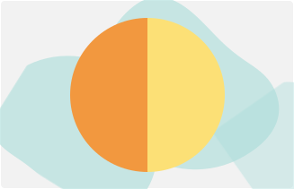

¿Qué es la inflamación gastrointestinal?
A pesar de que el nombre indica una relación directa al intestino, su alcance abarca todo el tracto digestivo, desde la boca, estómago, intestino delgado y grueso, colon, recto, hasta el ano.
La manifestación y concentración de la alteración en el tracto digestivo depende de cada enfermedad dentro de este grupo.
Inflamación
Extraintestinal
50% las personas con EII presentan algún tipo de manifestación extraintestinal asociada.